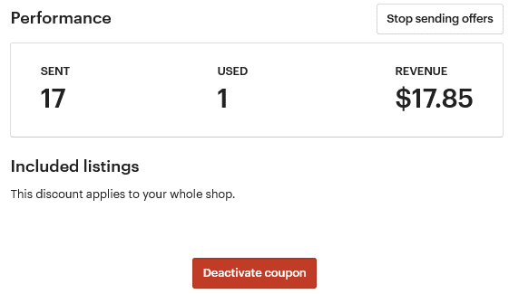
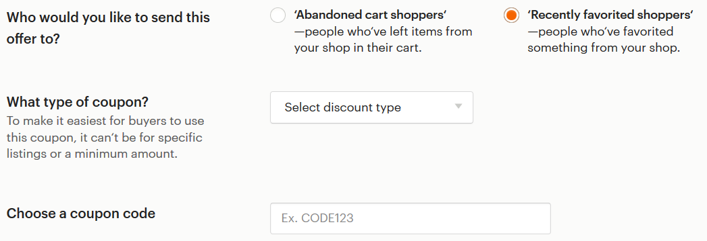
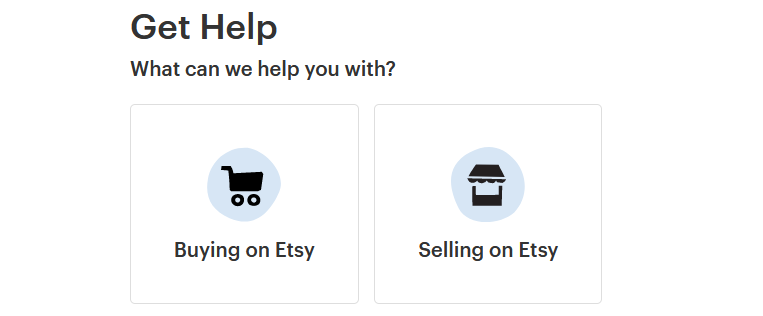
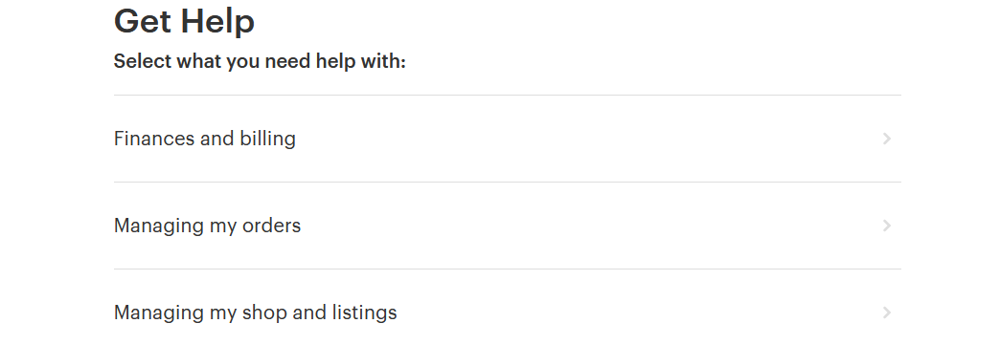
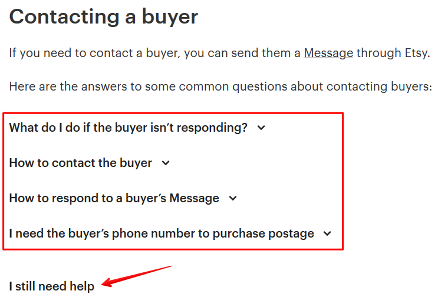

Что такое купоны Recently Favorited
Второй тип купонов, которые Etsy отправляет по электронной почте, помимо
Abandoned Cart, – это Recently Favorited.
Etsy высылает их тем покупателям, кто добавил любой ваш товар в избранное
48 часов назад.
Чтобы его создать, перейдите на страницу Marketing – Sales and coupons и
нажмите кнопку New special offer. Затем Set up offer.
Здесь есть 4 параметра, аналогичные Abandoned Cart:
• Who would you like to send this offer to – кому отправлять спец.
предложение, выбираем Recently favorited shoppers


• What type of coupon – тип купона (Percent off – скидка в процентах от 10
до 90; Fixed amount off – скидка в долларах, от 1 USD; Free standard ship-
ping – бесплатная доставка; Use an existing coupon – выбрать один из су-
ществующих купонов)
• Choose a coupon code – название купона, который нужно ввести покупа-
телю при оплате заказа
Если нажать на название купона, то вы попадёте в его настройки.
Здесь можно:
• приостановить отправку купонов – кто их уже получил смогут ими вос-
пользоваться (Stop sending offers)
• деактивировать купон – он больше не будет отправляться, отправленные
купоны действовать больше не будут (Deactivate coupon)
Какие ещё акции можно провести в магазине
Более подробно о скидках и распродажах в Etsy-магазине можно прочитать в
моей книге «Скидки и распродажи на Etsy: 45 вариантов акций и распродаж,
которые привлекут новых клиентов, удержат старых и увеличат ваш доход».
• Зачем проводить акции
• Где рассказать о своих акциях
• Как создать/отредактировать/завершить акцию на Etsy
• Варианты акций
o Лёгкие акции (простые в реализации – «сделал и забыл»)
o Акции средней сложности (часто требуют общения с покупателем)
o Экспериментальные акции (требуют контроля и ручной работы)
Бонус для читателей – скидка 20% по промокоду ETSYBOOK



12. Прочее
Есть ли у Etsy мобильное приложение
У Etsy есть 2 варианта приложений:
• для покупателей (Etsy)
• для продавцов (Sell on Etsy)
В первом можно просматривать и покупать товары, вести диалоги с продав-
цами, оставлять отзывы. Во втором – управлять своим магазином, следить за
продажами, фаворитами и т.п.
Скачать приложения можно в App Store и Google Play или найти по ссылке
https://www.etsy.com/mobile/
Как написать в техподдержку Etsy
Если у вас есть какой-то вопрос по работе сайта, то вы можете написать Этси
письмо.
Для этого перейдите на страницу https://www.etsy.com/help/contact (или меню
Shop Manager – Community and Help – Contact us).
Выберите подходящую категорию вопроса (для продавцов Selling on Etsy).


Затем выберите подкатегорию обращения.
В конце у вас появится список готовых ответов от Etsy.
Если вы не нашли в них ответа на свой вопрос – нажмите I still need help (мне
всё ещё нужна помощь).
После этого появится перечень способов связаться с техподдержкой: онлайн-
консультант (Chat with us), звонок (Call us) или сообщение по электронной почте
(Email us). Выберите то, что вам больше подходит.


Если это вариант Email us, то у вас откроется новая страница. Напишите тему
письма (Subject) и текст проблемы/вопросы (Description). Если необходимо, при-
крепите файл (Add file).
После этого нажмите кнопку Send — сообщение отправлено администрации.
Если выбрать пункт Call us, то появится список номеров техподдержки для Се-
верной Америки, Великобритании и Австралии.
Ещё одним вариантом для связи со службой поддержки является обращение к
конкретному администратору через личное сообщение на Этси. Можно выбрать
кого-то из специалистов, например, в данном разделе форума и написать ему:
https://community.etsy.com/t5/Announcements/bd-p/announcements
Администратор Etsy имеет оранжевую букву E рядом со своей аватаркой
В службу поддержки Etsy нужно писать на русском или ан-
глийском
У Этси нет русскоязычной службы поддержки. Поэтому все сообщения необхо-
димо писать на английском языке.
Хотя кто-то из продавцов пишет на русском. В этом случае бывает, что специа-
лист Etsy переводит вопрос с помощью онлайн-переводчиков, а затем присы-
лает 2 варианта ответа – на английском и русском (также переведённом с по-
мощью онлайн-переводчика).
Etsy закрыли мой магазин – что делать
У Etsy есть свод правил, их политика, о том, что можно продавать на их пло-
щадке, а что нельзя. Чаще всего именно по причине нарушения их общих пра-
вил и блокируются магазины. Если с вашим магазином случилось то же самое
– вот, что можно сделать.
Магазин могут закрыть по какой-то конкретной причине, а могут просто отпра-
вить письмо с сообщением, что вы нарушили правила. Более того, порой даже
и писем никаких не приходит – просто однажды вы обнаруживаете, что вашего
магазина нет на Etsy.
Чаще всего эти наказания справедливы. Но далеко не всегда. И если вы счита-
ете, что никаких правил не нарушали, то можно попытаться сделать следующее:
• написать
админам
Этси
сообщение
через
форму
https://www.etsy.com/help/contact
• написать электронное письмо в ответ на их письмо
• создать тему на форуме Etsy и обрисовать всю ситуацию
• написать личное сообщение знакомому вам админу Этси (например, вы с
ним общались на форуме)
Бывали случаи, что магазины открывали заново – либо продавцы доказывали,
что у них всё «чисто», либо их просто закрыли по ошибке.
Но бывает и так, что все ваши сообщения Этси игнорирует, отвечая лишь прось-
бой больше не создавать новые магазины – иначе и их заблокируют.
Etsy требуют доказать, что я сам делаю свои товары - как это
сделать
Чаще всего такая проверка встречается у новых магазинов, которые продают
что-то необычное и выглядящее очень профессионально. Например, кожаные
сумки или театральные костюмы.
В таких случаях Этси просит вас доказать, что именно вы – автор этих изделий.
Конкретно указывая, что им нужно в виде доказательств. Обычно, это фотогра-
фии вас за работой. Ваш рабочий кабинет/студия.
Будьте терпеливы и отправляйте всё, что они просят – тогда с вас «снимут по-
дозрения».
Есть ли на Etsy покупатели-мошенники
Конечно, как и повсюду в интернете, на Этси также есть свои мошеннические
схемы. Какими-то пользуются чаще, каким-то реже. Но лучше знать о них зара-
нее, чтобы не попасться на удочку подобному покупателю.
• несанкционированный платёж, или chargeback через банк (после получе-
ния товара покупатель заявляет своему банку, что он не делал эту покупку
– чаще всего банк встаёт на сторону своего клиента)
• нигерийские письма, или деньги скоро придут (платёж не проходит на
PayPal или на почту приходит письмо 1-в-1 похожее на сообщение от
Пайпала – при этом покупатель всё время торопит вас)
• пустая посылка (покупатель заявляет, что ему пришла пустая коробка без
товара)
• потерянная посылка (если посылка без трек-номера или не отслежива-
ется в стране получателя, то он может сказать, что ничего не получал)
• поврежденный товар (покупатель говорит, что товар сломался во время
пересылки и просит выслать повторный или вернуть деньги)
• подарите ваш товар, или обзор товара (приходит личное сообщение с
просьбой подарить товар больному ребёнку или выслать на обзор для
раскрученного аккаунта в соцсетях)
К сожалению, не во всех случаях продавцы могут себя обезопасить от подоб-
ных покупателей. В то же время, мы может сделать довольно многое: фотогра-
фировать процесс упаковки и отправки посылки, а также всегда высылать за-
казы только с трек-номером.
Что такое фаватоны и кликатоны и стоит ли в них участвовать
У многих команд на Этси есть свои игры, которые они используют для раскру-
чивания магазинов. Например, поставить лайк 10 товарам, которые запостили
выше вас. Или зайти в магазин и открыть на 10-20 секунд нужное количество
товаров.
Раньше такие игры хорошо работали, но сейчас большинство из них уже неэф-
фективны, так как Etsy постоянно ищут способы отслеживать подобные
накрутки.
Кроме того, в Sellers Policy написано, что такие действия могут расцениваться
как нарушения правил площадки:
take any other action (such as manipulating clicks, carts or sales) for the purpose of
shilling, manipulating search or circumventing Etsy's policies
Как сделать бэкап магазина
Бэкап – это резервное сохранение настроек магазина и листингов.
Например, вы случайно удалили нужный листинг или изменили заголовок то-
вара, после чего у него пропали просмотры. Вернуть всё в «рабочее» состояние
поможет бэкап магазина.
Есть несколько вариантов сделать бэкап.
1. Официальный от Etsy. Его можно сделать, если перейти на страницу Shop
Manager – Settings — Options — Download data.

2. Сторонние сервисы и сайты. Из известных мне сайтов такой функционал
есть у Seller Tools и Backtsy.
Подробнее о плюсах и минусах каждого варианта вы можете прочитать в статье
https://proetsy.ru/backup-magazina/
Какие в США главные праздники
В США, как и во многих странах, есть крупные праздники, на которые принято
дарить подарки. Мы все знаем про Рождество, Новый год и День святого Ва-
лентина. Но также есть и другие примечательные праздники и события:
• Пасха
• День матери
• День отца
• День независимости
• День труда
• День Колумба
• Хэллоуин
• День благодарения
• Чёрная пятница и Киберпонедельник
Подробнее об этих праздниках и о том, что на них принято дарить, вы можете
почитать в статье в блоге:
https://proetsy.ru/kalendar-gotovimsya-k-sobyitiyam-v-ssha-etsi/